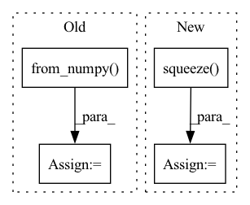

Pattern ID :1571
Before Change
mmg = mask[i].squeeze()
data[i] = cv2.warpAffine(img, M, (W, H), flags=cv2.INTER_CUBIC).reshape(C, H, W)
mask[i] = cv2.warpAffine(mmg, M, (W, H), flags=cv2.INTER_CUBIC).reshape(C, H, W)
T_aug += [torch.from_numpy( get_transform(0, 0, -rot)) ]
else:
T_aug += [torch.from_numpy(np.identity(4, dtype=np.float32))]
batch["data"] = torch.from_numpy(data)After Change
for j in range(1, window_size):
k = j + i * window_size
img = data[k].squeeze()
mmg = mask[k].squeeze()
M = cv2.getRotationMatrix2D((W / 2, H / 2), rot * 180 * j / np.pi, 1.0)
data[i] = cv2.warpAffine(img, M, (W, H), flags=cv2.INTER_CUBIC).reshape(C, H, W)
mask[i] = cv2.warpAffine(mmg, M, (W, H), flags=cv2.INTER_CUBIC).reshape(1, H, W)
T_21[i - 1] = np.matmul(T, T_21[i - 1])In pattern: SUPERPATTERN
Frequency: 3
Non-data size: 4
Instances Fragment ID: 7049387
Project Name: utiasasrl/hero_radar_odometry
Commit Name: 69b518ec294c236dc4305129ec07282c5d2e007c
Time: 2021-03-04
Author: keenburn2004@gmail.com
File Name: datasets/transforms.py
M Class Name: AnonimousClass
N Class Name: AnonimousClass
M Method Name: augmentBatch(2)
N Method Name: augmentBatch(2)
M Parent Class:
N Parent Class:
M File Name: datasets/transforms.py
N File Name: datasets/transforms.py
M Start Line: 8
M End Line: 28
N Start Line: 10
N End Line: 29
Before Change
out = out[0]
out.to_host()
res = torch.from_numpy( np.array(out))
res = F.upsample(res, size=gt.shape, mode="bilinear", align_corners=False)
res = res.sigmoid().data.cpu().numpy().squeeze()
res = (res - res.min()) / (res.max() - res.min() + 1e-8)
print("--> save results: {}".format(SAVE_PATH+name))
imageio.imwrite(SAVE_PATH+name, res)After Change
print(model)
os.makedirs(save_path, exist_ok=True)
for img_name in os.listdir(data_path):
image, h, w = get_image(
os.path.join(data_path, img_name),
mean=[0.485, 0.456, 0.406],
std=[0.229, 0.224, 0.225])
// put image array into ascend ai processor
image_tensor = Tensor(image)
image_tensor.to_device(device_id)
// infer
out = model.infer(image_tensor)
out = out[0]
out.to_host()
res = np.array(out)
// save results
res = mindspore.Tensor(res)
res = mindspore.ops.Sigmoid()(res)
res = mindspore.nn.ResizeBilinear()(res, (h, w))
res = (res - res.min()) / (res.max() - res.min() + 1e-8)
res = res.asnumpy().squeeze()
imageio.imwrite(save_path+img_name.replace(".jpg", ".png"), res)
if __name__ == "__main__": Fragment ID: 7049390
Project Name: gewelsji/dgnet
Commit Name: f82c53433a67c0ed8d98385254a023d800a1335c
Time: 2022-11-18
Author: gepengai.ji@gmail.com
File Name: lib_ascend/inference_om.py
M Class Name: AnonimousClass
N Class Name: AnonimousClass
M Method Name: infer(4)
N Method Name: infer(3)
M Parent Class:
N Parent Class:
M File Name: lib_ascend/inference_om.py
N File Name: lib_ascend/inference_om.py
M Start Line: 41
M End Line: 63
N Start Line: 45
N End Line: 86
Before Change
mmg = mask[i].squeeze()
data[i] = cv2.warpAffine(img, M, (W, H), flags=cv2.INTER_CUBIC).reshape(C, H, W)
mask[i] = cv2.warpAffine(mmg, M, (W, H), flags=cv2.INTER_CUBIC).reshape(C, H, W)
T_aug += [torch.from_numpy( get_transform(0, 0, -rot)) ]
else:
T_aug += [torch.from_numpy(np.identity(4, dtype=np.float32))]
batch["data"] = torch.from_numpy(data)After Change
for i in range(batch_size):
rot = np.random.uniform(-rot_max, rot_max)
T = get_transform(0, 0, -rot)
for j in range(1, window_size):
k = j + i * window_size
img = data[k].squeeze()
mmg = mask[k].squeeze()
M = cv2.getRotationMatrix2D((W / 2, H / 2), rot * 180 * j / np.pi, 1.0)
data[i] = cv2.warpAffine(img, M, (W, H), flags=cv2.INTER_CUBIC).reshape(C, H, W)
mask[i] = cv2.warpAffine(mmg, M, (W, H), flags=cv2.INTER_CUBIC).reshape(1, H, W) Fragment ID: 7049389
Project Name: utiasasrl/hero_radar_odometry
Commit Name: 69b518ec294c236dc4305129ec07282c5d2e007c
Time: 2021-03-04
Author: keenburn2004@gmail.com
File Name: datasets/transforms.py
M Class Name: AnonimousClass
N Class Name: AnonimousClass
M Method Name: augmentBatch(2)
N Method Name: augmentBatch(2)
M Parent Class:
N Parent Class:
M File Name: datasets/transforms.py
N File Name: datasets/transforms.py
M Start Line: 8
M End Line: 28
N Start Line: 10
N End Line: 29
Before Change
print("".join(cn_sent))
// 将当前以单词id表示的英文句子数据转为tensor，并放如DEVICE中
src = torch.from_numpy( np.array(data.dev_en[i])) .long().to(DEVICE)
// 增加一维
src = src.unsqueeze(0)
// 设置attention mask
src_mask = (src != 0).unsqueeze(-2)
// 用训练好的模型进行decode预测
out = greedy_decode(model, src, src_mask, max_len=MAX_LENGTH, start_symbol=data.cn_word_dict["BOS"])
// 初始化一个用于存放模型翻译结果句子单词的列表
translation = []
// 遍历翻译输出字符的下标（注意：开始符"BOS"的索引0不遍历）
After Change
res = []
with torch.no_grad():
// 在data的英文数据长度上遍历下标
for batch in tqdm(data):
// 待翻译的英文句子
en_sent = batch.src_text
// 对应的中文句子
cn_sent = batch.trg_text
// 打印模型翻译输出的中文句子结果
for i in range(len(en_sent)):
src = batch.src[i]
// 增加一维
src = src.unsqueeze(0)
// 设置attention mask
src_mask = (src != 0).unsqueeze(-2)
// 用训练好的模型进行decode预测
decode_result = greedy_decode(model, src, src_mask,
max_len=config.max_len).squeeze() .tolist()
// 模型翻译结果解码
translation = sp_chn.decode_ids(decode_result)
trg.append(cn_sent[i])
Fragment ID: 7049388
Project Name: hemingkx/chinesenmt
Commit Name: 9adf53cb6d9b875c9d173643a8d266d49d6f90eb
Time: 2020-12-15
Author: hemingkx@gmail.com
File Name: train.py
M Class Name: AnonimousClass
N Class Name: AnonimousClass
M Method Name: evaluate(2)
N Method Name: evaluate(2)
M Parent Class:
N Parent Class:
M File Name: train.py
N File Name: train.py
M Start Line: 53
M End Line: 84
N Start Line: 67
N End Line: 95